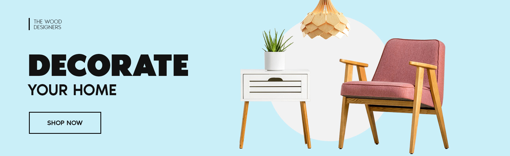

<div class="flex items-center relative">
  
  <div class="absolute w-full justify-between  px-2 md:flex hidden">
    <button
      mat-fab
      color="primary"
      aria-label="Example icon button with a delete icon"
    >
      <mat-icon>chevron_left</mat-icon>
    </button>
    <button
      mat-fab
      
      class="border-2 w-1"
      color="primary"
      aria-label="Example icon button with a delete icon"
    >
      <mat-icon>chevron_right</mat-icon>
    </button>
  </div>
</div>
